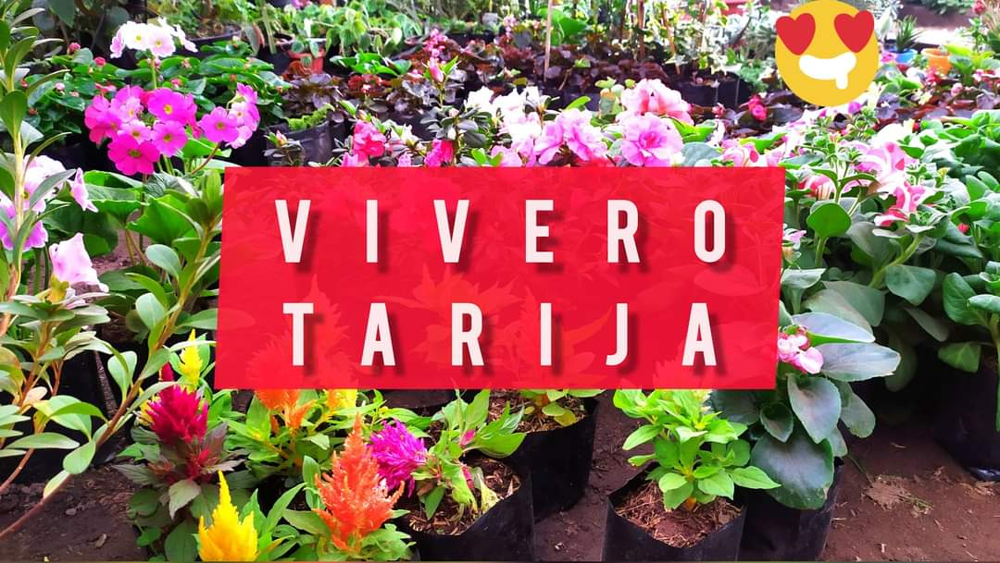

Vivero Tarija
Sean todos bienvenidos a esta página web donde proporcionaremos precios e información de los productos que estamos vendiendo.
Ubicación
Por el momento la dirección del Vivero no esta habilitada, cuando lo esté lo vamos a publicar en esta página web.
Hasta mientras nos puede encontrar sobre la calle Sucre esquina Santa Cruz, afuera de las oficinas Tigo, a una cuadra de la plaza principal de lunes a sábado a horas 9:30 a 15:00 en Yacuiba-Bolivia.
Eventos
Eventos Pasados
Actualmente este Vivero a participado en distintas Ferias las cuales son:
• 1era ExpoFeria de Plantas Ornamentales / 12~14-08-2021
• Feria Productiva por la Reactivación Económica / 27~29-08-2021
• 2da Feria de Plantas Ornamentales y Flores / 17~19-09-2021
Futuros eventos
En este momento se acerca una próxima feria en el que participará este Vivero la cual será:
• 3ra Feria de Plantas Ornamentales y Flores / 29~31-10-2021
Productos
Estos son algunos de los productos que estamos vendiendo con sus respectivos precios:
Plantas
Algunas de las plantas que estamos vendiendo son:
- Las Rosas ingerto y las Rosas criollas a 18bs
- Las Rosas enanas a 15bs
- Las plantas aromáticas como son:
- El Romero, Ruda, Tomillo, Menta, Yerbabuena, están de entre 5bs a 10bs, el costo dependerá del tamaño de la planta.
- Los Cactus y las suculentas están de entre 5bs a 10bs, el costo dependerá del tamaño de la planta.
Abono
En cuanto a abonos estamos vendiendo:
- El Humus a 25bs
- El Abono vegetal a 30bs
Decoración
En cuanto a la parte de decoración estamos vendiendo:
- Piedras decorativas de entre 5bs a 10bs, el precio dependerá del tamaño de la bolsa de las piedras decorativas.
Redes
Por el momento solo tenemos una red social.
Próximamente estaremos en las demás redes sociales.
Presione el botón para ver nuestra página web en Facebook.